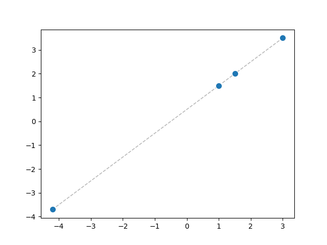

Tutorial
A Forward Line
D
Ready to define a function?
W
At last!
D
First: line.
from pypie import op, Tensor from typing import Tuple @op def line(x: float, params: Tuple[float, float]) -> float: w = params[0] b = params[1] y = w * x + b return y
W
These imports are new.
D
pypie gives us tensors and learning primitives.typing gives us other type annotations like Tuple.Tuple[float, float] means params contains exactly two floats.
W
What about op?
D
@op marks the next def as a pypie operator.
That lets pypie validate its correctness and parallelize its execution.
W
In line, we unpack params into w and b, compute y = w * x + b, then return y.
Is that the whole story?
D
Yes.
What is the type of y?
W
I want to sanity-check.
Earlier, + showed up with int tensors.
Here w, x, and b are floats.
Why is w * x + b still valid?
D
Good check. Let's generalize the type of +:[T] (x: Tensor[T][[]], y: Tensor[T][[]]) -> Tensor[T][[]].
Here T is an implicit variable. It makes both inputs share the same numeric type. At call time, pypie figures out the concrete T from the actual inputs.
BTW, * has the same type as +.
W
So here T becomes float, and w * x + b has type float.
D
Exactly. pypie compares the return expression type against the definition.
If they differ, it raises a type error.
W
Then if I annotate the result as int...
@op def bad_line(x: float, params: Tuple[float, float]) -> int: w = params[0] b = params[1] y = w * x + b return y
Right. The type checker reports:int != float.
D
Because line is rank polymorphic, the same definition applies to tensors.
Let's try params = (1.0, 0.5) and a Tensor of xs.
W
Like this?
params = (1.0, 0.5) xs = Tensor([-4.2, 1.0, 1.5, 3.0]) ys = line(xs, params) print(ys)
Result: Tensor([-3.7, 1.5, 2.0, 3.5]).
D
Those are the four points on the line.

W
Clean line! No surprises.
D
Next step: learn the line.
W
Learn what?
D
It means finding params from xs and ys.
So far, we chose params, made xs, and computed ys.
In practice, we first have some real data for xs and ys and then estimate params.
Let's pretend:xs and ys are real data;
true params are unknown.
Then we write a program that estimates params.
W
Okay. How do we begin?
D
Start with an initial guess for params.
Any guess works; say (0, 0).
Run line(xs, params) and call the output ys_pred.
W
You mean this?
params = (0, 0) ys_pred = line(xs, params) print(ys_pred)
We get Tensor([0, 0, 0, 0]). ys_pred is far from the real ys.
D
Expected.
Now we need to measure how far off we are. This is called the loss.
W
Do we create a new function to measure the loss?
D
It's called loss.
@op def loss[n](ys_pred: Tensor[float][[n]], ys: Tensor[float][[n]]) -> float: return ((ys_pred - ys) ** 2).sum(0)
W
Does [n] introduce a new implicit variable?
D
Yes, n describes a dimension of the input tensors. It tells PyPie that ys_pred and ys share the same shape. So that ys_pred - ys is valid.
W
Why square with ** 2 and then call sum(0)?
D
Almost always, we use a scalar as the loss.
We first square each difference, so negatives and positives cannot cancel out during the following sum.
This gives us a Tensor[float][[n]].
We then collapse the first dimension of this tensor to one scalar, using sum(0).
Let's run loss.
W
Like this?
print(loss(ys_pred, ys))
It prints 32.19, the loss at (0, 0)?
D
Exactly.
Then we update params, recompute loss, and repeat.
W
Do we keep going until loss is 0?
D
Usually not.
For real data, exact zero is uncommon and often undesirable.
In practice, the training data usually contain some noise and errors. Reaching zero often means overfitting: params have also learned from the noise and errors, and may perform worse on new, unseen data.
For now, we simply update and repeat for a fixed number of iterations.
W
Will we define more functions to update and repeat?
D
We will, in the next chapter.
W
Brain break earned!